용접기능사 (2013-10-12 기출문제)
1과목: 용접일반
1. 다음 중 가스 용접에 있어 납땜의 용제가 갖추어야 할 조건으로 옳은 것은?
- 청정한 금속면의 산화가 잘 이루어 질 것
- 전기 저항 납땜에 사용되는 것은 부도체일 것
- 용제의 유효 온도 범위와 납땜의 온도가 일치할 것
- 땜납이 표면 장력과 차이를 만들고 모재와의 친화력이 낮을 것
(정답률: 55%)

2. 다음 중 MIG 용접의 용적 이행 형태에 대한 설명으로 옳은 것은?
- 용적 이행에는 단락이행, 스프레이 이행, 입상 이행이 있으며 가장 많이 사용되는 것은 입상 이행이다.
- 스프레이 이행은 저전압 저전류에서 아르곤 가스를 사용하는 경합금 용접에서 주로 나타난다.
- 입상 이행은 와이어보다 큰 용적으로 용융되어 이행하며 주로 CO2 가스를 사용할 때 나타난다.
- 직류 정극성일 때 스패터가 적고 용입이 깊게 되며, 용적 이행이 안정한 스프레이 이행이 된다.
(정답률: 39%)
3. 다음 중 CO2 가스 아크 용접에서 일반적으로 다공성의 원인이 되는 가스가 아닌 것은?
- 산소
- 수소
- 질소
- 일산화탄소
(정답률: 46%)
4. 다음 중 CO2 가스 아크 용접 결함에 있어 기공 발생의 원인으로 볼 수 없는 것은?
- 팁이 마모되어 있다.
- 용접 부위가 지저분하다.
- CO2 가스 유량이 부족하다.
- 노즐과 모재간의 거리가 너무 길다.
(정답률: 52%)
5. 다음 중 연소의 3요소를 올바르게 나열한 것은?
- 가연물, 산소, 공기
- 가연물, 빛 탄산가스
- 가연물, 산소, 정촉매
- 가연물, 산소, 점화원
(정답률: 82%)
6. 다음 중 용접 비용을 계산하는데 있어 비용절감 요소로 틀린 것은?
- 대기 시간 최대화
- 효과적인 재료 사용 계획
- 합리적이고 경제적인 설계
- 가공 불량에 의한 용접의 손실 최소화
(정답률: 86%)
7. TIG 용접 토치는 공랭식과 수냉식으로 분류되는데 가볍고 취급이 용이한 공랭식 토치의 경우 일반적으로 몇 A정도 까지 사용하는가?
- 200
- 380
- 450
- 650
(정답률: 51%)
8. 다음 중 용접 작업에 있어 가용접시 주의해야 할 사항으로 옳은 것은?
- 본용접보다 높은 온도로 예열을 한다.
- 개선 홈 내의 가접부는 백치핑으로 완전히 제거한다.
- 가접의 위치는 주로 부품의 끝 모서리에 한다.
- 용접봉은 본 용접 작업 시에 사용하는 것 보다 두꺼운 것을 사용한다.
(정답률: 49%)
9. 다음 중 일렉트로 슬래그 용접 이음의 종류로 볼 수 없는 것은?
- 모서리 이음
- 필릿 이음
- T 이음
- X 이음
(정답률: 68%)
10. 다음 중 용접용 보안면의 일반 구조에 관한 설명으로 틀린 것은?
- 복사열에 노출될 수 있는 금속부분은 단열처리 해야 한다.
- 착용자와 접촉하는 보안면의 모든 부분에는 피부자극을 유발하지 않는 재질을 사용해야 한다.
- 용접용 보안면의 내부 표면은 유광처리하고 보안면 내부로는 일정량 이상의 빛이 들어오도록 해야 한다.
- 보안면에는 돌출 부분, 날카로운 모서리 혹은 사용도중 불편하거나 상해를 줄 수 있는 결함이 없어야 한다.
(정답률: 86%)
11. 다음 중 서브머지드 아크 용접에 사용되는 용제에 관한 설명으로 틀린 것은?
- 소결형 용제는 용융형 용제에 비하여 용제의 소모량이 적다.
- 용융형 용제는 거친 입자의 것일수록 높은 전류에 사용해야 한다.
- 소결형 용제는 페로실리콘, 페로망간 등에 의해 강력한 탈산 작용이 된다.
- 용제는 용접부를 대기로부터 보호하면서 아크를 안정시키고, 야금 반응에 의하여 용착 금속의 재질을 개선하기 위해 사용한다.
(정답률: 53%)
12. 다음 중 가스 용접 작업에 관한 안전사항으로 틀린 것은?
- 아세틸렌 병 주변에서 흡연하지 않는다.
- 호스의 누설 시험 시에는 비눗물을 사용한다.
- 산소 및 아세틸렌 병 등 빈병은 섞어서 보관한다.
- 용접 시 토치의 끝을 긁어서 오물을 털지 않는다.
(정답률: 85%)
13. 다음 중 전기 저항 용접에 있어 맥동 점용접에 관한 설명으로 옳은 것은?
- 1개의 전류 회로에 2개 이상의 용접점을 만드는 용접법이다.
- 전극을 2개 이상으로 하여 2점 이상의 용접을 하는 용접법이다.
- 점용접의 기본적인 방법으로 1쌍의 전극으로 1점의 용접부를 만드는 용접법이다.
- 모재 두께가 다른 경우 전극의 과열을 피하기 위하여 사이클 단위를 몇 번이고 전류를 단속하여 용접하는 것이다.
(정답률: 50%)
14. 다음 중 제품별 노내 및 국부풀림의 유지 온도와 시간이 올바르게 연결된 것은?
- 탄소강 주강품 : 625±25℃ 판 두께 25㎜에 대하여 1시간
- 기계 구조용 연강재 : 725±25℃ 판 두께 25㎜에 대하여 1시간
- 보일러용 압연강재 : 625±25℃ 판 두께 25㎜에 대하여 1시간
- 용접 구조용 연강재 : 725±25℃ 판 두께 25㎜에 대하여 1시간
(정답률: 62%)
15. TIG용접에서 교류 전원을 사용 시 모재가 (-)극이 될 때 모재 표면의 수분, 산화물 등의 불순물로 인하여 전자방출 및 전류의 흐름이 어렵고, 텅스텐 전극이 (-)극이 되는 경우에 전자가 다량으로 방출되는 등 2차 전류가 불평형하게 되는데 이러한 현상을 무엇이라 하는가?
- 전극의 소손작용
- 전극의 전압상승작용
- 전극의 청정작용
- 전극의 정류작용
(정답률: 41%)
16. 다음 ( ) 안에 가장 적합한 내용은?
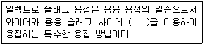
- 전자 빔열
- 통전된 전류의 저항열
- 가스열
- 통전된 전류의 아크열
(정답률: 59%)
17. 다음 중 가스 절단 작업 시 주의사항으로 틀린 것은?
- 가스 절단에 알맞은 보호구를 착용한다.
- 절단 진행 중에 시선은 절단면을 떠나서는 안 된다.
- 호스는 흐트러지지 않도록 정해진 꼬임 상태로 작업한다.
- 가스 호스가 용융금속이나 산화물의 비산으로 인해 손상되지 않도록 한다.
(정답률: 88%)
18. 다음 중 CO2 아크 용접 시 박판의 아크 전압(V?) 산출 공식으로 가장 적당한 것은? (단, I는 용접 전류 값을 의미한다.)
- Vo=0.07×I+20±5.0
- Vo=0.⑤×I+11.5±3.0
- Vo=0.06×I+40±6.0
- Vo=0.04×I+15.5±1.5
(정답률: 57%)
19. 다음 중 방사선 투과 검사에 대한 설명으로 틀린 것은?
- 내부결함 검출에 용이하다.
- 검사 결과를 필름에 영구적으로 기록할 수 있다.
- 라미네이션 및 미세한 표면 균열도 검출된다.
- 방사선 투과 검사에 필요한 기구로는 투과도계, 계조계, 증감지 등이 있다.
(정답률: 58%)
20. 다음 중 용접 결함에 있어 치수상 결함에 해당하는 것은?
- 오버랩
- 기공
- 언더컷
- 변형
(정답률: 78%)
21. 볼트나 환봉 등을 강판이나 형강에 직접 용접하는 방법으로 볼트나 환봉을 홀더에 끼우고 모재와 볼트 사이에 순간적으로 아크를 발생시켜 용접하는 것은?
- 피복 아크 용접
- 스터드 용접
- 테르밋 용접
- 전자 빔 용접
(정답률: 70%)
22. 다음 중 용접부의 검사방법에 있어 비파괴 시험으로 비드 외관, 언더컷, 오버랩, 용입불량, 표면 균열 등의 검사에 가장 적합한 것은?
- 부식 검사
- 외관 검사
- 초음파 탐상검사
- 방사선 투과검사
(정답률: 77%)
23. 압축공기를 이용하여 가우징, 결함부위 제거, 절단 및 구멍 뚫기 등에 널리 사용되는 아크 절단 방법은?
- 탄소 아크 절단
- 금속 아크 절단
- 산소 아크 절단
- 아크 에어 가우징
(정답률: 76%)
24. 가스 용접에서 산소용기 취급에 대한 설명이 잘못된 것은?
- 산소용기 밸브, 조정기 등을 기름천으로 잘 닦는다.
- 산소용기 운반 시에는 충격을 주어서는 안 된다.
- 산소 밸브의 개폐는 천천히 해야 한다.
- 가스 누설의 점검은 비눗물로 한다.
(정답률: 85%)
25. 200V용 아크 용접기의 1차 입력이 15KVA일 때 퓨즈의 용량은 얼마(A)가 적합한가?
- 65
- 75
- 90
- 100
(정답률: 71%)
26. 용접법과 기계적 접합법을 비교할 때, 용접법의 장점이 아닌 것은?
- 작업공정이 단축되며 경제적이다.
- 기밀성, 수밀성, 유밀성이 우수하다.
- 재료가 절약되고 중량이 가벼워진다.
- 이음 효율이 낮다.
(정답률: 78%)
27. 산소-아세틸렌가스 용접의 장점이 아닌 것은?
- 가열시 열량조절이 쉽다.
- 전원설비가 없는 곳에서도 쉽게 설치할 수 있다.
- 피복아크용접보다 유해광선의 발생이 적다
- 피복아크용접보다 일반적으로 신뢰성이 높다
(정답률: 62%)
28. 가변압식 가스 용접 토치에서 팁의 능력에 대한 설명으로 옳은 것은?
- 매 시간당 소비되는 아세틸렌가스의 양
- 매 시간당 소비되는 산소의 양
- 매 분당 소비되는 아세틸렌가스의 양
- 매 분당 소비되는 산소의 양
(정답률: 70%)
29. 가스 용접에서 모재의 두께가 8㎜일 경우 적합한 가스 용접봉의 지름(㎜)은? (단, 이론적인 계산식으로 구한다.)(오류 신고가 접수된 문제입니다. 반드시 정답과 해설을 확인하시기 바랍니다.)
- 2.0
- 3.0
- 4.0
- 5.0
(정답률: 70%)
30. 피복 아크 용접봉에 탄소량을 적게 하는 가장 큰 이유는?
- 스패터 방지를 위하여
- 균열 방지를 위하여
- 산화 방지를 위하여
- 기밀 유지를 위하여
(정답률: 57%)
31. 전류 조정이 용이하고 전류 조정을 전기적으로 하기 때문에 이동부분이 없으며 가변저항을 사용함으로써 용접전류의 원격 조정이 가능한 용접기는?
- 탭 전환형
- 가동 코일형
- 가동 철심형
- 가포화 리액터형
(정답률: 75%)
32. 아세틸렌은 액체에 잘 용해되며 석유에는 2배, 알콜에는 6배가 용해된다. 아세톤에는 몇 배가 용해되는가?
- 12
- 20
- 25
- 50
(정답률: 68%)
33. 직류 아크 용접기에 대한 설명으로 맞는 것은?
- 발전형과 정류기형이 있다.
- 구조가 간단하고 보수도 용이하다.
- 누설자속에 의하여 전류를 조정한다.
- 용접 변압기의 리액턴스에 의해서 수하 특성을 얻는다.
(정답률: 57%)
34. 용접봉의 피복 배합제 중 탈산제로 쓰이는 가장 적합한 것은?
- 탄산칼륨
- 페로망간
- 형석
- 이산화망간
(정답률: 70%)
35. 절단부위에 철분이나 용제의 미세한 입자를 압축공기나 압축질소로 연속적으로 팁을 통하여 분출시켜 그 산화열 또는 용제의 화학작용을 이용하여 절단하는 것은?
- 분말 절단
- 수중 절단
- 산소창 절단
- 포갬 절단
(정답률: 63%)
2과목: 용접재료
36. 다음 중 아크 용접에서 아크쏠림 방지법이 아닌 것은?
- 교류 용접기를 사용한다.
- 접지점을 2개로 한다.
- 짧은 아크를 사용한다.
- 직류 용접기를 사용한다.
(정답률: 75%)
37. 다음 중 압접에 속하지 않는 용접법은?
- 스폿 용접
- 심용접
- 프로젝션 용접
- 서브머지드 아크 용접
(정답률: 66%)
38. 두께가 12.7㎜인 연강판을 가스 절단할 때 가장 적합한 표준 드래그 길이는?
- 약 2.4㎜
- 약 5.2㎜
- 약 5.6㎜
- 약 6.4㎜
(정답률: 46%)
39. 가스 용접 작업에서 양호한 용접부를 얻기 위해 갖추어야 할 조건으로 잘못된 것은?
- 기름, 녹 등을 용접 전에 제거하여 결함을 방지한다.
- 모재의 표면이 균일하면 과열의 흔적은 있어도 된다.
- 용착 금속의 용입상태가 균일해야 한다.
- 용접부에 첨가된 금속의 성질이 양호해야 한다.
(정답률: 84%)
40. 탄소강에 니켈이나 크롬 등을 첨가하여 대기 중이나 수중 또는 산에 잘 견디는 내식성을 부여한 합금강으로 불수강이라고도 하는 것은?
- 고속도강
- 주강
- 스테인리스강
- 탄소공구강
(정답률: 65%)
41. 다음 중 Cu의 용융점은 몇 ℃인가?
- 1083℃
- 960℃
- 1530℃
- 1455℃
(정답률: 69%)
42. 다음 중 철강의 탄소 함유량에 따라 대분류한 것은?
- 순철, 강, 주철
- 순철, 주강, 주철
- 선철, 강, 주철
- 선철, 합금강, 주물
(정답률: 62%)
43. 경도가 큰 재료를 A1 변태점 이하의 일정온도로 가열하여 인성을 증가시킬 목적으로 하는 열처리법은?
- 뜨임
- 풀림
- 불림
- 담금질
(정답률: 46%)
44. 공구용 강재로 고탄소강을 사용하는 목적으로 가장 적합한 것은?
- 경도와 내마모성을 필요로 하기 때문에
- 인성과 연성이 필요하기 때문에
- 피로와 충격에 견디어야 하기 때문에
- 표면 경화를 할 목적으로
(정답률: 50%)
45. 마그네슘의 성질에 대한 설명 중 잘못된 것은?
- 비중은 1.74이다.
- 비강도가 알루미늄합금보다 우수하다.
- 면심입방격자이며 냉간가공이 우수하다.
- 구상흑연 주철의 첨가제로 사용한다.
(정답률: 46%)
46. 탄소강의 열처리 방법 중 표면경화열처리에 속하는 것은?
- 풀림
- 담금질
- 뜨임
- 질화법
(정답률: 48%)
47. 내열강의 원소로 많이 사용되는 것은?
- 코발트(Co)
- 크롬(Cr)
- 망간(Mn)
- 인(P)
(정답률: 42%)
48. 알루미늄에 약 10%까지의 마그네슘을 첨가한 함금으로 다른 주물용 알루미늄 합금에 비하여 내식성, 강도, 연신율이 우수한 것은?
- 실루민
- 두랄루민
- 하이드로날륨
- Y합금
(정답률: 49%)
49. 다음 중 탄소강에서 적열취성을 방지하기 위하여 첨가하는 원소는?
- S
- Mn
- P
- Ni
(정답률: 49%)
50. 다음 중 용접 입열이 일정할 때 냉각속도가 가장 느린 재료는?
- 연강
- 스테인리스강
- 알루미늄
- 구리
(정답률: 42%)
3과목: 기계제도
51. 그림과 같은 도면의 설명으로 가장 올바른 것은?
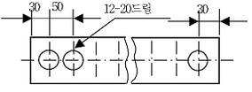
- 전체 길이가 660㎜이다.
- 드릴 가공 구멍의 지름은 20㎜이다.
- 드릴 가공 구멍의 수는 30개이다.
- 드릴 가공 구멍의 피치는 30㎜이다.
(정답률: 60%)
52. KS에서 기계제도에 관한 일반사항 설명으로 틀린 것은?
- 치수는 참고치수, 이론적으로 정확한 치수를 기입할 수도 있다.
- 도형의 크기와 대상물의 크기와의 사이에는 올바른 비례 관계를 보유하도록 그린다. 다만 잘못 볼 염려가 없다고 생각되는 도면은 도면의 일부 또는 전부에 대하여 이 비례 관계는 지키지 않아도 좋다.
- 기능상의 요구, 호환성, 제작 기술 수준 등을 기본으로 불가결의 경우만 기하공차를 지시한다.
- 길이치수는 특별히 지시가 없는 한 그 대상물의 측정을 3점 측정에 따라 행한 것으로 하여 지시한다.
(정답률: 35%)
53. 일반 구조용 압연강재 SS400에서 400이 나타내는 것은?
- 최저 인장 강도
- 최저 압축 강도
- 평균 인장 강도
- 최대 인장 강도
(정답률: 69%)
54. 그림의 용접 도시 기호는 용접을 나타내는가?
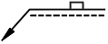
- 점 용접
- 플러그 용접
- 심 용접
- 가장자리 용접
(정답률: 72%)
55. 다음 선들이 겹칠 경우 선의 우선순위가 가장 높은 것은?
- 중심선
- 치수 보조선
- 절단선
- 숨은선
(정답률: 63%)
56. 그림과 같은 구조물의 도면에서 (A), (B)의 단면도의 명칭은?
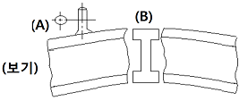
- 온 단면도
- 변환 단면도
- 회전도시 단면도
- 부분 단면도
(정답률: 62%)
57. 다음 입체도의 화살표 방향을 정면도로 한다면 좌측면도로 적합한 투상도는?
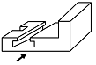
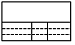
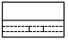
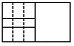
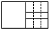
(정답률: 67%)
58. KS배관 제도 밸브 도시 기호에서 기호의 뜻은?
- 안전 밸브
- 체크 밸브
- 일반 밸브
- 앵글 밸브
(정답률: 79%)
59. 다음 그림과 같은 제3각법 정투상도에 가장 적합한 입체도는?
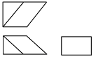
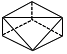
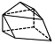
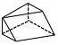
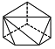
(정답률: 73%)
60. 치수 기입이 “□20”으로 치수 앞에 정사각형이 표시 되었을 경우의 올바른 해석은?
- 이론적으로 정확한 치수가 20㎜이다.
- 체적이 20㎣인 정육면체이다.
- 면적이 20㎣인 정육면체이다.
- 한 변의 길이가 20㎜인 정사각형이다.
(정답률: 75%)